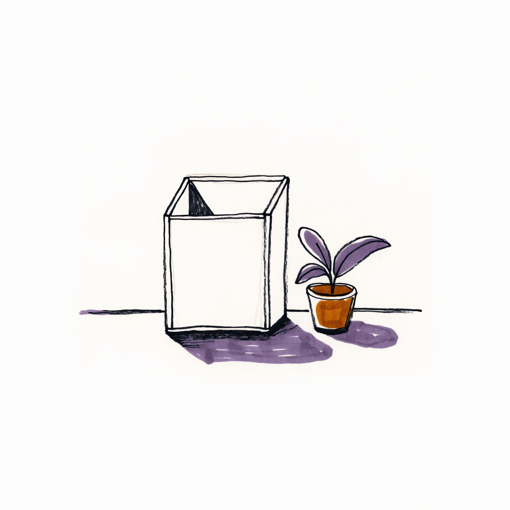

오늘 할 일
오늘 처리할 원자료와 초안, 발행 일정을 한눈에 살펴요.
초안 이어 쓰기 새 원자료 올리기
서울시의회에서 지금 다루는 소재
공개 회의록과 서울시 발표에서 골랐어요. 어느 의원실이든 원자료로 쓸 수 있어요.
서울시의회 일정
정례회, 행정사무감사, 예산 심사 일정이에요.
의원실이 이미 낸 발언과 법안, 일정을 유권자가 한 번 읽고 이해하는 글로 바꿔 여섯 채널에 맞게 만듭니다. 무엇이 읽혔는지 기록해 다음에 낼 것을 정합니다.
출처와 위험을 먼저 확인하고 보좌진이 승인한 글만 나갑니다. 여당, 야당, 무소속 어느 의원실에도 같은 기준을 씁니다.
오늘 처리할 원자료와 초안, 발행 일정을 한눈에 살펴요.
공개 회의록과 서울시 발표에서 골랐어요. 어느 의원실이든 원자료로 쓸 수 있어요.
정례회, 행정사무감사, 예산 심사 일정이에요.
원자료 한 건을 여섯 채널 초안으로 바꾸고 문장을 다듬어요.
실제로 게시된 글을 원자료와 나란히 놓고 같은 질문 여섯 개로 봐요.
확률과 응답 시간은 Articul8 Bivia 결정 모델에 실제로 보낸 호출의 결과예요. 원자료와 글은 공개된 원문에서 그대로 옮겼어요. 판정은 검토 순서를 정하는 보조 값이고, 발행 결정은 보좌진이 해요.
서울시의회 실제 일정 위에 승인한 콘텐츠를 올려요. 승인 전 글은 달력에 올라가지 않아요.
승인한 주간 꼭지를 구독자 주소록으로 예약 발송해요. 실패하면 다시 보내지 않고 알려요.
오늘 낼 것과 검토 대기 건을 전화로 읽어 드려요. 민원 전화는 요약해서 반응 기록에 남겨요.

아직 반응 기록이 없어요. 발행한 콘텐츠가 생기면 여기에 쌓여요.
| 고객 | 막히는 곳 |
|---|---|
| 국회의원실 홍보 비서관 | 회의록에서 메시지를 뽑고 채널마다 다시 쓴다. 선거법 검토를 감으로 한다. |
| 기초의원 본인 | 글 쓸 시간이 없고 사진과 일정이 휴대폰에 흩어져 있다. |
| 광역의회 정책지원관 | 정책 용어를 시민 말로 바꾸고 인용 출처를 확인한다. |
| 도구 | 단계 | 실패하면 |
|---|---|---|
| Articul8 Bivia | 말투 분류, 공격 수위, 원자료 일치 판정 | 답하지 않으면 사람 검토로 넘긴다 |
| Liner 검색 | 주장 문장의 출처 찾기 | 출처 없음으로 표시하고 보류한다 |
| 스티비 | 주간 뉴스레터 예약 발송 | 다시 보내지 않고 알린다 |
| VAPI | 아침 음성 브리핑, 민원 전화 요약 | 문자로 대체한다 |
※ Bivia, VAPI, Liner는 키를 발급해 호출을 확인했다. Liner는 크레딧 반영 전이고 스티비는 요금제 반영 전이다.
국회의원
지방의원